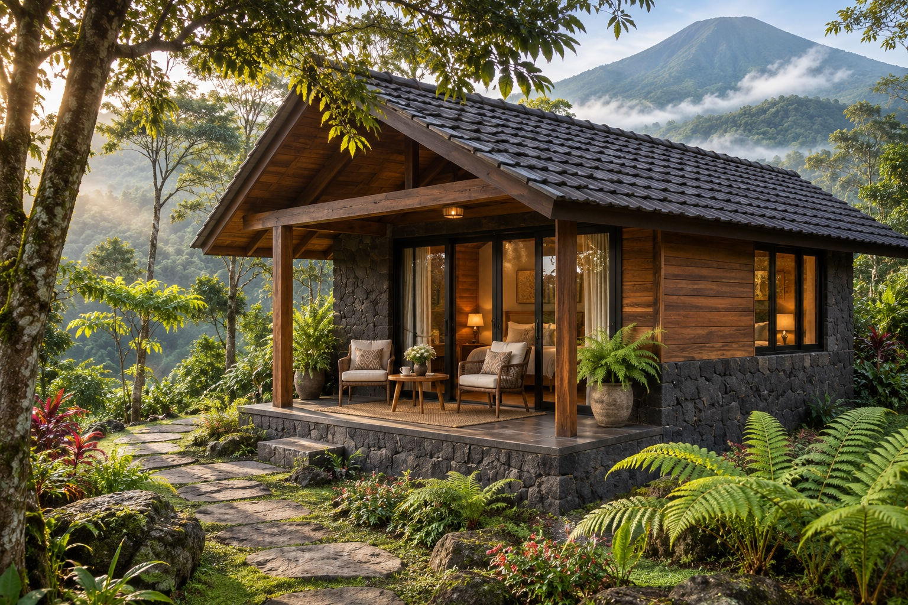

A private approach
A private driveway leads to a gated entrance, with security and managed guest access supporting the privacy of the community.

The Mount Paradise vision
Private homes in the trees. A Clubhouse at the heart. A landscape that brings them together.
Discover more
Rooted in the mountains
Irregular grey stone, warm timber and deep verandas carry the character of the existing pilot into a new family of homes. Tree ferns, green hedges and lantern-lit stone paths shape gardens with room for privacy and time together.
Explore cabins and lodgesThe shared heart

At the center of Phase 2, the Clubhouse and its garden pavilions bring the community together. Club Membership is planned to provide access to the full-size swimming pool, tennis court, gym and spa/baths, with an intimate mountain-lodge restaurant and café completing the social heart.

A home at your scale
Begin with a Mountain Cabin, or explore the Retreat, Family, Reserve and Estate lodges. Each has a private relationship with the garden and a shared connection to the wider sanctuary.
Compare the collectionWithin the gates

A private driveway leads to a gated entrance, with security and managed guest access supporting the privacy of the community.
Golf carts follow stone roads between scattered villas, lodges and the Clubhouse. Smaller stone paths wind through the gardens for journeys on foot.
Homes sit among woodland and layered planting, with private verandas and garden terraces offering a quiet retreat from shared community life.
The built pilot is the starting point. Phase 2 extends the community across 10 hectares, with a future expansion opportunity of 20+ hectares in Phase 3. Both later phases carry forward the wooded mountain setting, with homes nestled among trees and connected by landscaped routes.
Explore the land